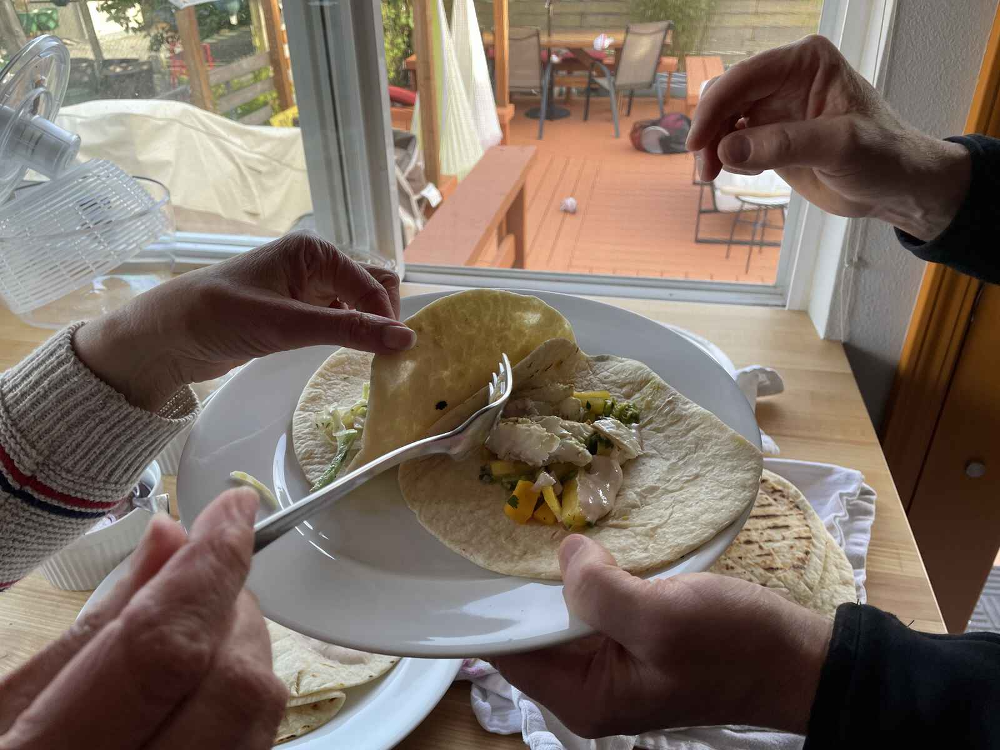
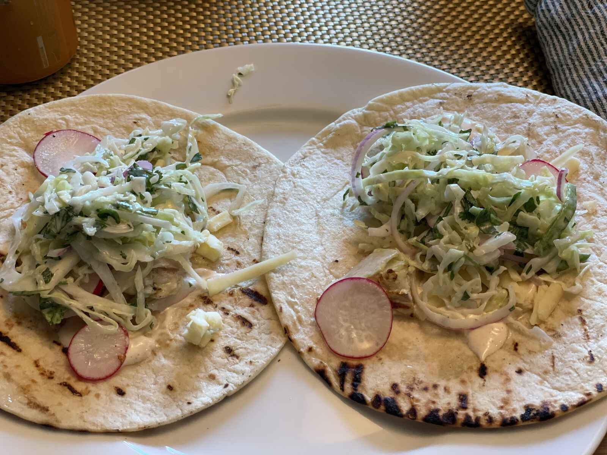
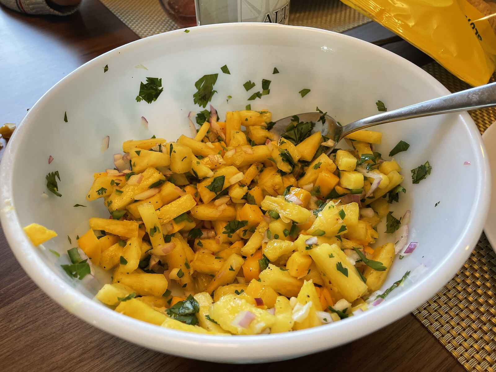

Fish Tacos
Tacobouta great dinner!
I had about a half a mind to leave the post there and go on with my night, but I’m not that much of a tease. After taking the entire week off for my birthday last week (from work and from cooking) I realized I missed making dinner so here I am again, slaving over a grill, forgetting to take pictures and ragging on the fact my kids are picky eaters. It’s a fucking miraculous return to normalcy!
Given that yesterday turned out to be much nicer than I expected it to be I had to change the meal I was going to make (that feta and tomato pasta thing). After querying my coworkers as to what I should grill I realized that I hadn’t been to the store yet for my weekly trip so thankfully I hadn’t bought the food that I wasn’t now going to make. The consensus from my single coworker after getting into a deep discussion about plantains was to make fish tacos.

I settled on halibut at the store since it wasn’t a million dollars, was not frozen and was wild caught, which are essentially the only things that I check for when I’m buying fish. Previously frozen is fine, but I’d rather buy it frozen and thaw it myself. Farmed fish can be OK, but only if it’s like trout or catfish or tilapia. Even before I moved to the Pacific Northwest I knew to never buy fucking farmed Salmon. Shit is just goddamn unnatural. Did you know most of it is dyed pink because the feed they get isn’t what they eat in the wild. (Which is what makes them pink just like motherfucking flamingos, only fish weren’t once dinosaurs evaluationally speaking.)
I’m gonna take a break right here though to complain about how fucking shitty the fish counter is at almost EVERY goddamn supermarket here in the Seattle area. We’re in the midst of a part of the world that is knee fucking deep in fish, near some of the most productive fisheries in the fucking US, and I can’t get anything but salmon and occasionally some fucking cod? Shrimp? Only frozen and farmed. Squid? LOL. A whole fish? MAYBE you can get a trout.
EVEN THE FUCKING DEDICATED FISH SELLERS ARE LIKE THIS.
(I’d have said fish mongers but like what the fuck is this 18th century England? SHOE SHINE GUV’NAH?)
Amazingly enough probably the best place to buy fish is at the horribly tourist-trappy Pike Place Market, but like parking down there goddamn sucks and thanks to the fucking NIMBY assholes that lived here in the late 90s and early 2000s there’s no good public transportation from my neighborhood. Also, I guess we’re still in a fucking pandemic. Although it’s probably empty down there. Let me know in the comments if there’s a better place.
HA I FUCKING GOT YOU THERE ARE NO COMMENTS BECAUSE FUCK THE INTERNET THAT’S WHY.
(I guess those NIBMY assholes still live here now, but like at least there’s a train coming. IN 2038.)

Wow. Apparently I’m more angry about fish than I thought. (And don’t even get this Vermonter started on Phish.)
When I got home I made a marinade with the stems of the cilantro that I picked the leaves from for the (spoiler alert) slaw, guacamole and salsa, some jalapeños, olive oil, garlic, lime juice and salt and let it sit. But only for like 45 minutes — I didn’t want the acid in the lime juice to “cook” the fish (like a ceviche).
But that was I lie. That isn’t the first thing I did.
When I got home I unpacked the groceries. Then I shredded a half-head of cabbage on my mandolin (shredded? mandolin? LUTE SOLO!) and salted it and put it in a colander to start breaking it down. Then I made some salsa out of some mango, pineapple, jalapeño, red onion, garlic, cilantro and lime juice, along with some guacamole which I’ve mentioned enough on this blog that I probably could have omitted it. When the cabbage was soft, I tossed it with some thinly sliced red onion and jalapeño and then dressed with a dressing made out of crema, mayo, lime juice, salt, pepper and canola oil.

I grilled the fish and the tortillas and then had everyone make their own tacos. Well, I mean, except my youngest. Who I had to grate some cheese for and make a “quesadilla” but cold. Which was wonderful since the cheese wasn’t melted they picked it up and half of the cheese fell on the floor and then we had to sweep it up after dinner along with the rest of the detritus. The other kid DID eat two fish tacos though, so I guess I can’t really fucking be upset?
Other things I’ll make this week now that I’m back on my shit:
- Grilled pork chops with asparagus & burnt cabbage
- Cumin Beef
- Pizza
- Roasted Cauliflower & Swiss Chard Toasts
Gonna be a fancy fucking week, eh?